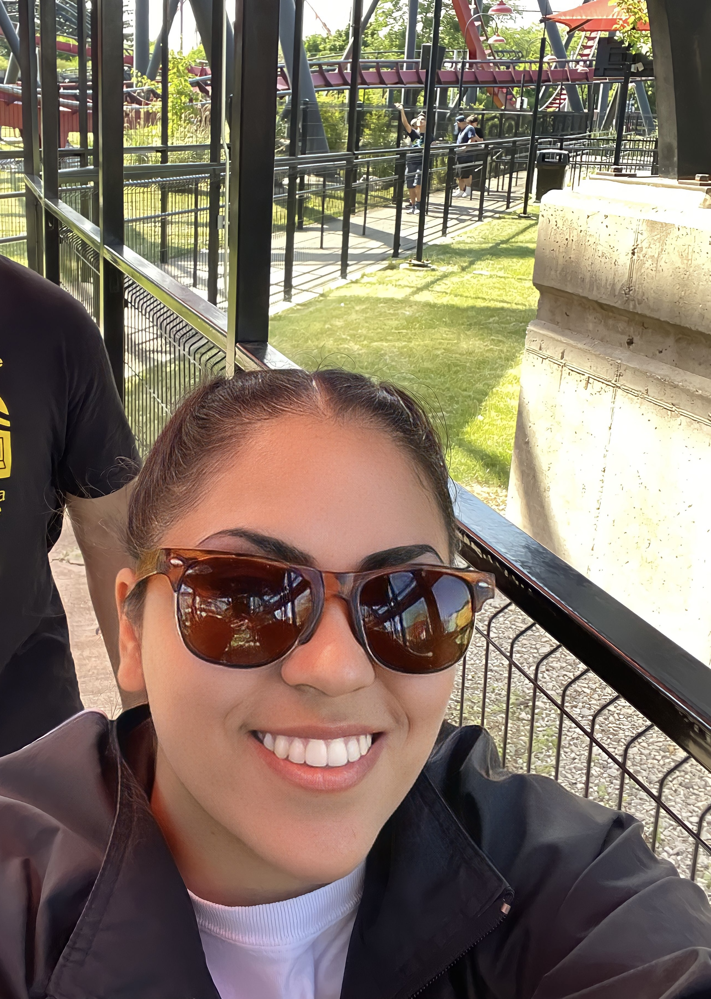
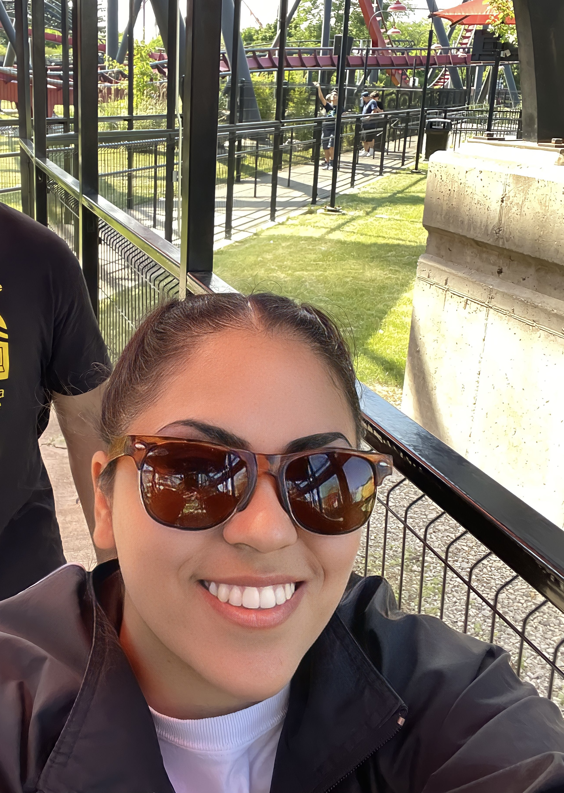

Kayla Garcia's Homepage
 

About Me
Im Kayla Garcia, im currently a senior at UC Santa Cruz studying computer science: game design. My main intrest is teaching, so as soon as i get my bachelors, i plan to continue to get my masters in education, so i can one day teach young people the power of programing too.